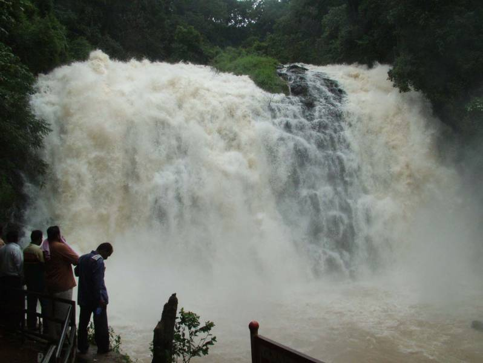

MADIKERI
Madikeri is a hill town in southern India. Framed by the Western Ghats mountain range, it’s known for the Raja’s Seat, a simple monument overlooking forests and rice paddies. In the center, the 17th-century Madikeri Fort features 2 stone elephants at the entrance. Nearby, the domed Omkareshwar Temple is dedicated to the Hindu deity Shiva. To the northwest, cascading Abbey Falls is surrounded by spice plantations
Madikeri Fort Overview
Built in the 17th century by Muddu Raja using mud, the structure was rebuilt by Tipu Sultan in granite. Linga Rajendra Wodeyar II reconstructed it in brick and mortar between 1812 and 1814.
Life size stone elephants are seen at the entrance. A panoramic view of the entire city is provided by the fort.

History
Map c. 1854
The history of Madikeri is related to the history of Kodagu. From the 2nd to the 6th century AD, the northern part of Kodagu was ruled by Kadambas. The southern part of Kodagu was ruled by Gangas from the 4th to the 11th century. After defeating the Gangas in the 11th century, Cholas became the rulers of Kodagu. In the 12th century, the Cholas lost Kodagu to the Hoysalas. Kodagu fell to the Vijayanagar kings in the 14th century. After their fall, the local chieftains like Karnambahu (Palegars) started ruling their areas directly. They were defeated by Haleri Dynasty founder Veeraraju, (Nephew of Ikkeri Sadashiva Nayaka who were descendants of Talakadu Ganga Dynasty), and his father in-law Bomma Gowda, the Seeme Gowda of Haleri kings. In the year 1700AD Ikkeri Somashekara Nayaka gifted Puttur and Amara Sullia Magnes of Tulunadu to Haleri Kings. Descendants of Veeraraju who are known as "Haleri Dynasty" ruled Kodagu from 1600-1834 AD. Haleri king Mudduraja built the Fort in Madikeri and made it[2] as their capital. Mudduraja, the third Haleri king started leveling the land around Madikeri and built a fort in the year 1681. Madikeri
Pictures of madikeri


places to visit in madikeri:
- MANDALPATTI
The history of Madikeri is related to the history of Kodagu. From the 2nd to the 6th century AD, the northern part of Kodagu was ruled by Kadambas. The southern part of Kodagu was ruled by Gangas from the 4th to the 11th century. After defeating the Gangas in the 11th century, Cholas became the rulers of Kodagu. In the 12th century, the Cholas lost Kodagu to the Hoysalas. Kodagu fell to the Vijayanagar kings in the 14th century. After their fall, the local chieftains like Karnambahu (Palegars) started ruling their areas directly. They were defeated by Haleri Dynasty founder Veeraraju, (Nephew of Ikkeri Sadashiva Nayaka who were descendants of Talakadu Ganga Dynasty), and his father in-law Bomma Gowda, the Seeme Gowda of Haleri kings. In the year 1700AD Ikkeri Somashekara Nayaka gifted Puttur and Amara Sullia Magnes of Tulunadu to Haleri Kings. Descendants of Veeraraju who are known as "Haleri Dynasty" ruled Kodagu from 1600-1834 AD. Haleri king Mudduraja built the Fort in Madikeri and made it[2] as their capital. Mudduraja, the third Haleri king started leveling the land around Madikeri and built a fort in the year 1681. Madikeri
- ABBEY FALLS
- RAJAS TOMB
- KOTEBETTA
- CHOCI COORG
- CHELAVARA FALLS
- CHOCI COORG
- MERCARA GOLF CLUB
- KOTE ABBEY
- GOLDEN TEMPLE